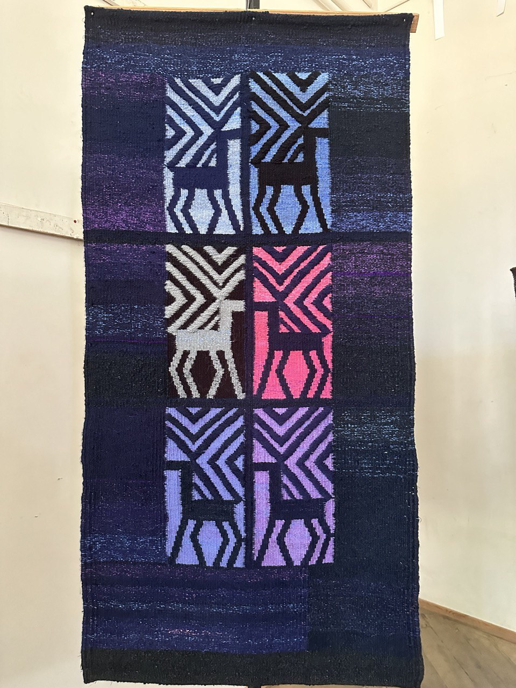
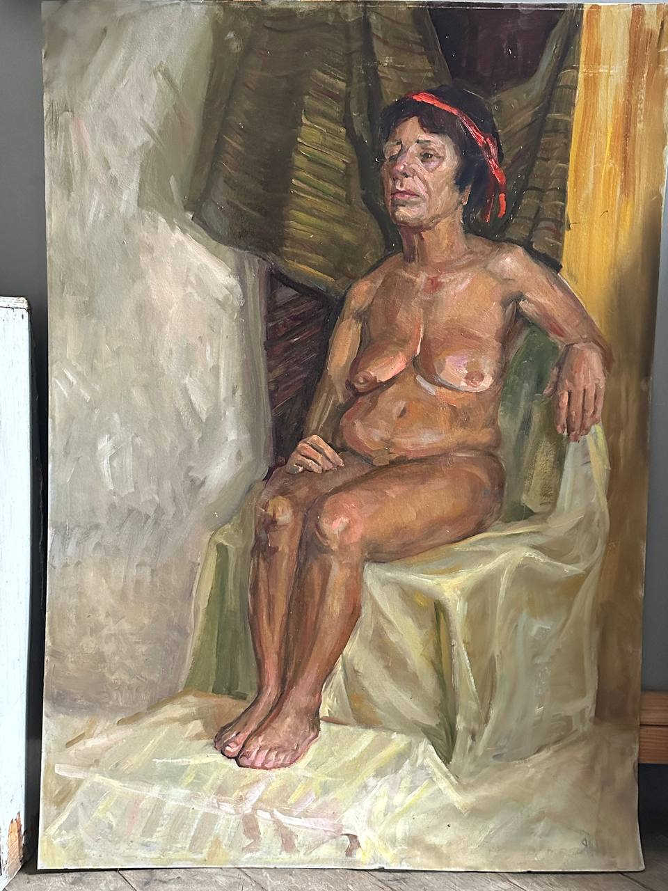
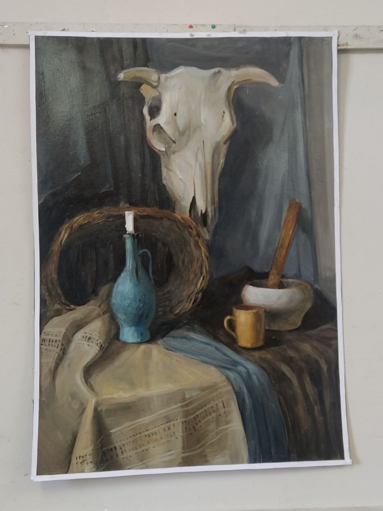
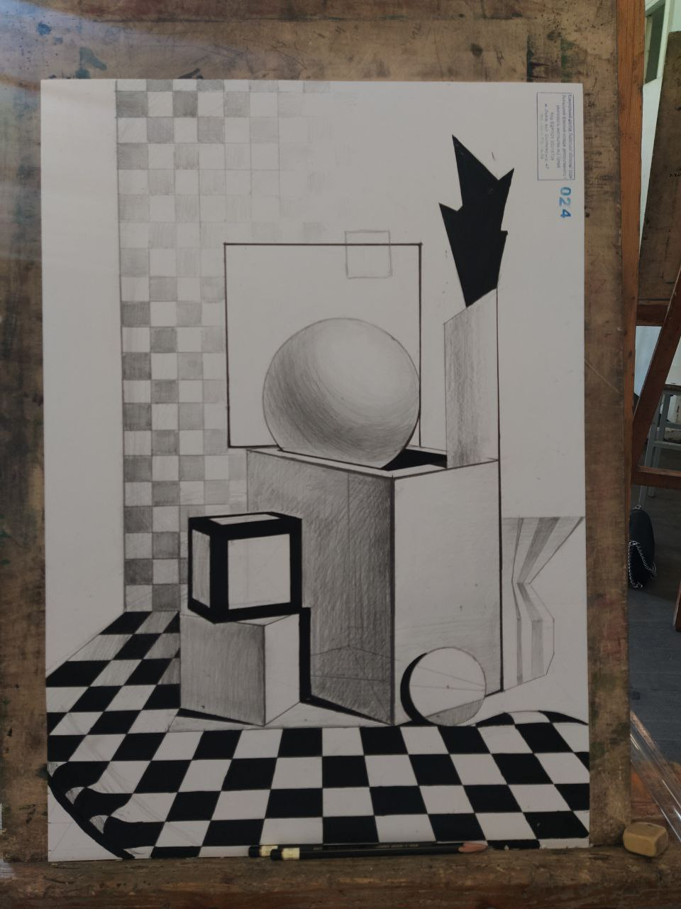
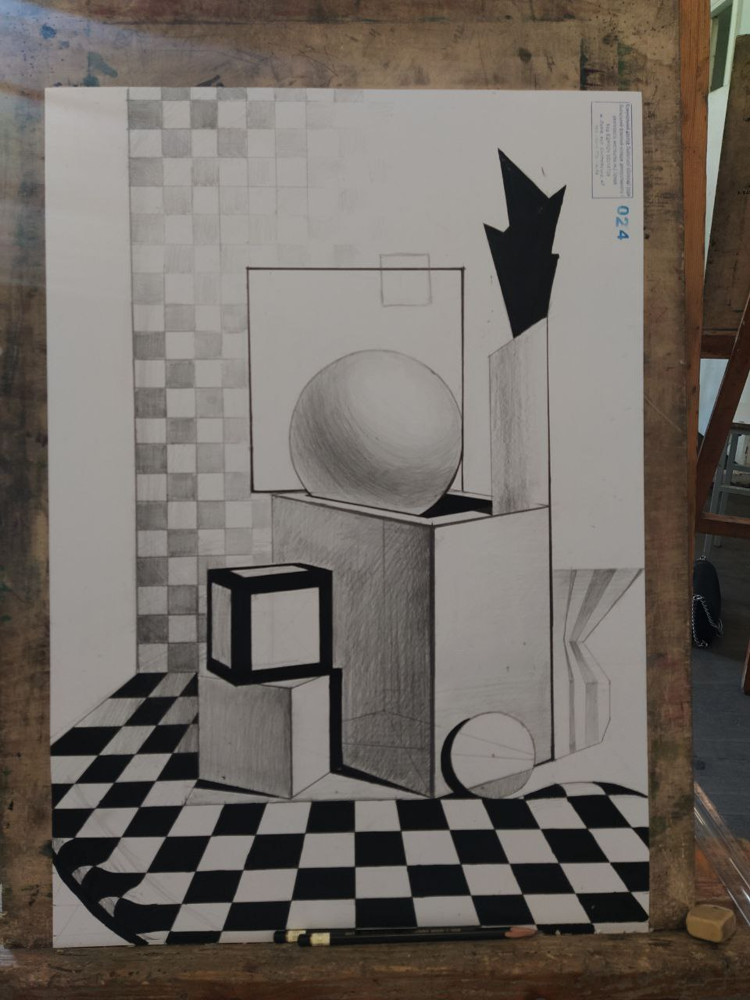

Мої роботи
Ткацтво
Малярство
 Рисунок
 

Мене звати Янів Яна. Народилася і проживаю у Львові nnhvhghjhhjjjjjjjj
Я навчаюсь на п'ятому курсі Львівського коледжу декоративного та ужиткового мистецтва імені Івана Труша на мистецькому факультеті. Моя спеціальність - Художній текстиль. У рамках навчання вивчаю живопис, рисунок, композиція, ткацтво.
Якщо ви хочете зв'язатися зі мною, будь ласка, скористайтесь одним з наступних способів: